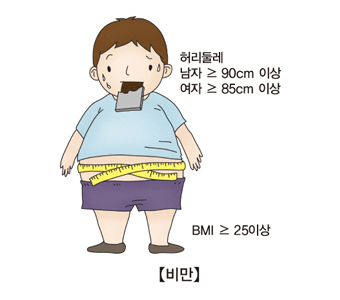
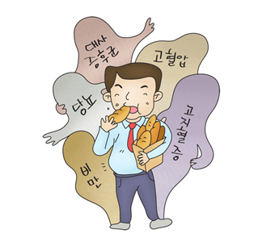

비만
정의
비만은 단순히 체중이 많이 나가는 것보다는
'체내에 과다하게 많은 양의 체지방이 쌓인 상태'
를 의미합니다.
근육량이 많고 체지방 증가가 없는 드문 경우에는 체중이 많이 나가더라도 비만이라고 할 수 없습니다.

원인
섭취한 음식량에 비해 활동량이 부족할 때 생기는 것입니다. 이러한 단순한 개념에도 불구하고,
비만은
다양한 신경내분비학적 물질과 에너지 대사에 관련된 여러 요소의 이상이 유전적 또는 현상적으로 아주 복잡하게 연관
되어 발생합니다. 불규칙한 식습관, 과다한 음식 섭취, 운동 부족, 내분비계통 질환, 유전적 요인, 정신적 요인 및 약물 등이 비만의 현실적 원인이 됩니다. 
증상
비만의 증상에는 겉으로 드러나는 현상, 숨찬 증상, 관절통 등이 있습니다.
이외에도 각종 합병증에 의한 매우 다양한 증상이 나타날 수 있습니다.